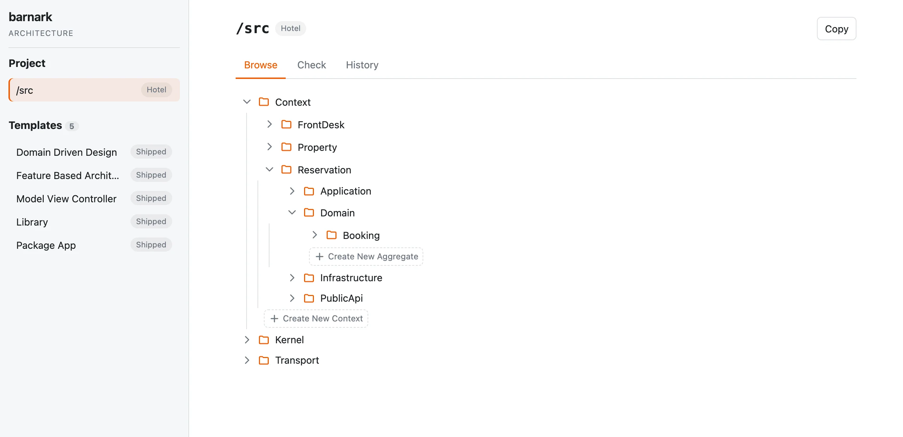
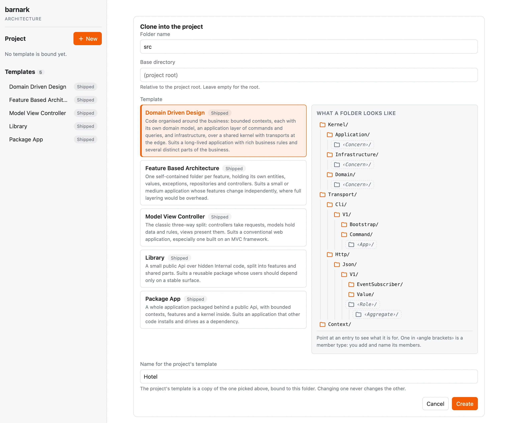
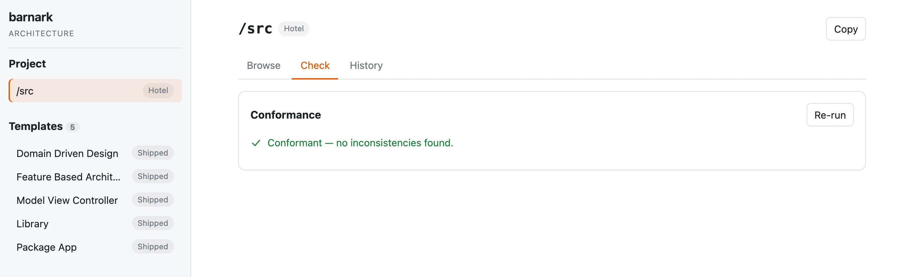

A place for every folder, and a reason for it.
Without a shared architectural vocabulary, classes of every sort end up in any folder. Barnark starts a new project in the architecture you choose, gives every folder a meaning that says what belongs in it, and creates each new part in its right place. Would you know if a new developer had just saved an Application file into the Domain? With every folder’s meaning written down, anyone reading it can spot a file in the wrong place. In a barn it is the Architecture tab, and barnark init makes any project a barn to use it on its own.

Any architecture. Yours to pick.
Designing software architecture is not a case of one-size-fits-all. Pick the shape that suits your project from a catalogue of well-known ones, or from a template of your own. Every template describes what it suits best, and Barnark shows you its shape before you pick it.
Domain Driven Design
Bounded contexts around a shared kernel.
Feature Based
Each feature in one self-contained folder.
Model View Controller
The classic three-way split.
Library
A small public surface over hidden internals.
Package App
A whole application behind a public Api.
Your own templates
Copy any template, your project’s one included, into a template of your own, named by you. Changing one never changes the other.
Pick an architecture. Get the folder.
Click Clone into the project, choose the architecture your project should follow, name your copy of it, and the folder is created with its whole structure. Each choice has a description recommending what that architecture is best suited for. Its folder structure is shown, so you can see how the architecture looks before anything is made.
No copying and pasting necessary. Just click and go.

src/, about to follow Hotel, its own copy of Domain Driven Design.Every folder knows what it’s for.
Each folder in a template has a meaning in plain words: what belongs in it. A tag says which layer it belongs to, and the tag’s meaning says which way that layer’s dependencies point. A team that has never talked about dependency direction learns that there is such a thing, just by reading its own architecture.
Dependency direction is taught, not enforced. Following it stays a human matter, and a team that wants enforcement can add a tool such as deptrac.
- Domain/Domain
- The core business logic and rules, expressed as Aggregates.
- Domaintag
- The layer that holds the business model: the Aggregates and the rules they keep. A Context’s Domain depends only on itself, its own PublicApi and the Kernel’s Domain, never on another Context. The Kernel’s Domain depends on nothing else in the project.
- PublicApi/
- The only part of a Context another Context may depend on: what it publishes about itself, with its internals kept behind it. It depends on nothing but the Domain Kernel, so everything a published Contract takes, returns or throws lives here too.
Word for word from the bundled template.
See a whole layer at once.
A layer’s folders sit all over a project: the Kernel has an Application folder, and so does every context. Each one carries the layer’s tag, shown beside its name. Pick a tag, and Barnark shows only the folders that carry it, with the folders above them, so the whole layer is in front of you.
The tags come with the template, written by its author. Barnark never guesses one from a folder’s name.

Application layer: the Kernel’s and every context’s.New parts land in the right place.
Your project’s template knows what belongs where. Wherever something may be added, Barnark offers a button for it. Name it, and the whole structure it needs is created for you, so the right way is also the easy way.
Barnark makes folders, not code. What goes in a folder is yours to write, and its meaning says what that is.
Create New Context → Billing
Context/
Billing/ ← new
Application/
Domain/
Infrastructure/
PublicApi/Has anything strayed? Ask.
Nobody has to declare a project “well architected”. Press a button, or run one command, and Barnark checks your project’s folder against its architecture. Either it comes back clean, or it names each folder that doesn’t belong, and where.
It’s the same idea as a proven story in Barnspec, applied to structure: the evidence decides, not opinion.

src/, checked against Hotel, its own copy of Domain Driven Design.Made for new projects.
Barnark keeps a new project well shaped from its first commit. It isn’t for judging a codebase that never followed an architecture: a check over one would list a great many problems, and that isn’t what it’s for. It looks after folders, not files, and it teaches dependency direction rather than enforcing it.
Your own copy, tied to nothing.
When you make a folder, Barnark copies the template into a template of your own, under the name you give it. Nothing ties the copy back: a later change to the catalogue never reaches it, and nothing in your project names the template it came from.
Your project’s template is kept as revisions, and none is ever changed in place. Adding a context or a feature adds it to the template as a new revision, and so does deleting one. Barnark writes each revision's reason. The History tab lists them, and shows each as a read-only tree.
- Hotel · Created with its folder
- Kernel/ · Transport/ · Context/, which holds a member type: Context
- Hotel · Added Context/Billing.
- A new revision. Billing/ arrives with its Domain/, Application/, Infrastructure/ and PublicApi/.
History is read-only.
How it works underneath.
Everything above, in more detail, for when you want it.
The template catalogueThe five bundled shapes, folder by folder
| Template | Top-level shape | Suits |
|---|---|---|
| Domain Driven Design | Context/ (one per bounded context), Kernel/, Transport/ | A long-lived application with rich business rules and several distinct parts of the business |
| Feature Based Architecture | One folder per feature, each with Controller/ Entity/ Exception/ Repository/ Value/ | A small or medium application whose features change independently |
| Model View Controller | Controller, model and view folders, named by you | A conventional web application, especially one built on an MVC framework |
| Library | Api/ (contracts, exceptions, factories, values) over Internal/ | A reusable package whose users should depend only on a stable surface |
| Package App | An application behind an Api/, with contexts, features and a kernel inside | An application that other code installs and drives as a dependency |
Templates are Barncept concepts, each with a description of what it is and what it suits, and a meaning for every folder. Domain Driven Design and Package App also tag their layers’ folders. Barnark reads one only to copy it, into your project’s template or another of your own; from then on the copy is yours.
Checking a projectCollections, and nothing left out
A template describes a shape, not your code: some folders it names itself, and some, like “Context”, are collections, which hold the members you add. Each member is kept in the project’s template, so your contexts are checked where they actually are, against what their collection holds. Files are never checked: a template says only what folders there are.
Nothing is left out of a check: a folder the template has no place for is reported until it is gone.
What gets createdFolders, with their whole structure
A folder you name arrives with its whole fixed structure, and a folder created empty keeps a .gitkeep so that git keeps it. Apart from that, Barnark never creates a file in your folders. Nothing already on disk is overwritten. Adding or removing a folder you named is a new revision of the template. Each template of your own is kept in the barn’s .barn/barnark/templates/.
The command lineFor scripts, agents and terminal lovers
$ barnark init # once, if the project has no .barn/ folder
$ barnark template:clone "Domain Driven Design" Shop src # your project's template, Shop, and src/
$ barnark template:offers src/Context # what may be created here?
$ barnark template:new Context Billing src/Context
$ barnark template:check # check src/ against Shop
$ barnark template:copy Shop Market # a template of your ownThe folder your project’s template is bound to is recorded in .barn/barnark/tracked-folders.json, committed with your code and the templates, so a check needs no arguments.
Start your project in shape.
Barnark needs PHP 8.5 and Composer. Install it into a new project and open the browser app from anywhere in it. The app offers to create .barn/ if the project needs one. Then you can add your first folder.
$ vendor/bin/barnark guiInstallationInstall from Packagist
Require Barnark, its command line and its browser app. Composer pulls in Barncept and Barnscaff.
$ composer require --dev rmb32/barnark rmb32/barnark-cli rmb32/barnark-gui